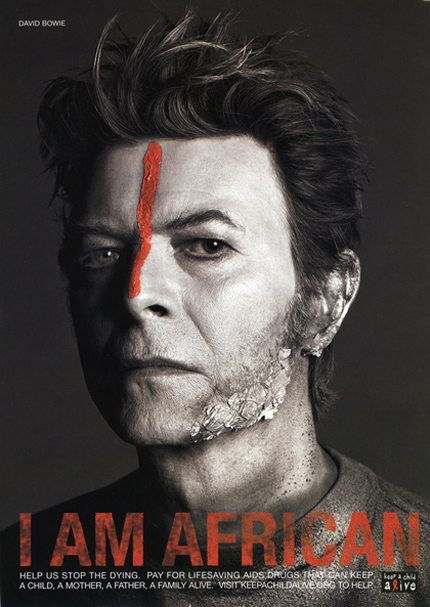
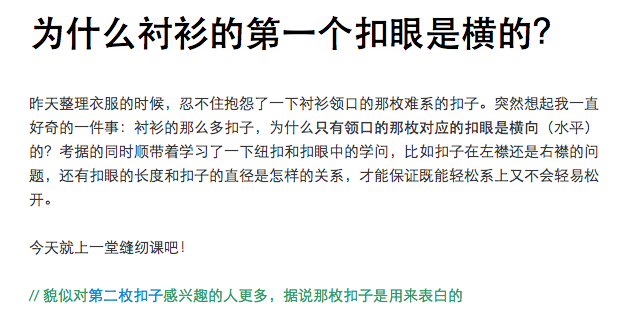
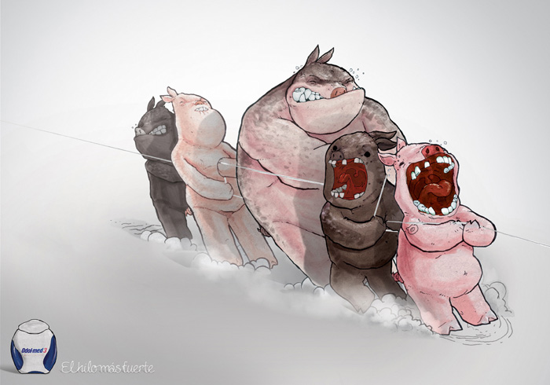
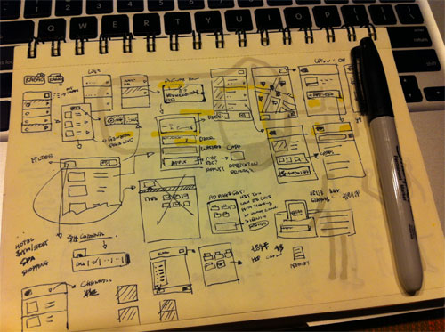

这篇我想写得散文些，篇篇都写成软文也不是个事儿。
我们有个香港的设计师哥们，整体穿着裙裤，Nike Airforce的珍藏版，一开口就是：满他力体（Mentality）我打算给翻成思维模式。他的意思是，设计师需要不太一样的思维模式。我就在思考这个问题：到底一个敏捷体验设计师需要些什么样的思维模式？
共情Empathy
共情的话题曾经在这篇博客中提到，核心观点是你得明白，作为一个设计师，你基本没有为自己设计的可能，而你所面对的未来用户，可能跟你想的完全不同。
共情设计（Empathic Design）广泛用于广告或者工业设计领域，例如下面这张David Bowie的宣传海报，这位上世纪80年代的摇滚符号性人物涂抹非洲土著油彩，有着强烈跟随效应。

而在商业领域，共情设计充分体现在为目标消费者所处环境的专门定制，例如在菲律宾，东芝电视机的销量不足，是因为菲律宾人通常喜欢在客厅里看电视，睡觉前又把电视搬到卧室睡前继续看，减轻电视机重量以及增加把手的坚固和舒适度便使销量立刻反弹，这就是共情的设计。
而共情本身是成本巨大的，如果不在四大会计所工作过，就不知道他们的显示器大部分都是竖置并两个并排，更不会知道他们讨厌分页；如果没来过中国的菜市场，就不知道讲价这件事情是生活方式，不能讲价的百思买就不会那么快输给苏宁国美；如果没有在中国传统社区成长，就不会知道中国曾经的小区是没有咖啡店、便利店、后院义卖会这种东西，风靡世界的CityVille在中国就不会有这么多麻烦。
花一年的时间做用户调研越来越难发生，除去可以被固化的实践（不在这里展开）还更多靠知识补全，而知识可以来自于文化的间接传播，或来自于直接的生命体验，前者我指读书，后者我指旅行。
放下那些教程或者所谓的用户体验设计的经典，读文化、历史、游记、和风俗史，有一些东西，积攒多了就能发酵，孕育出共情；看看这个世界，就呆呆地看着，看人的着装，争吵的样子，每个细节和动作，也许有天都能让你绘声绘色地跟你的客户描绘他们所在的世界，在这样的世界里客户和你才能挖掘出消费者真正的需要。
好奇Curiosity
当你构筑一个足够的共情世界后，是什么驱动你发现那些也许你的客户看起来不是问题的地方？是你的好奇心。
保罗本耐特（Paul Bennet）同学是IDEO的一位设计师同志，他把他的博客叫做好奇编年史，在这个博客里记录了关于盆栽、伊卡特针织、人类对于超级大树喜好等等；Localhost同学（曾）是ThoughtWorks的一位设计师，她的博客里同样记录着关于冷笑话的设计模式、尿钟法的可行性、以及站在巨人肩膀的诡辩，就像下面这个关于衬衫位置的问题：

他们一位是巨子一位是妹子，可对于好奇心这件事情却出奇的一致──在看似平常的世界中看到不一样的东西；他们总是用另外一只眼看这个世界，创新的闪念有时候就存在于这种不循规蹈矩、打破常规的习惯。
好奇心同样帮助你在客户的情景中，发现他们也许不认为是问题的问题──始终把你的好奇心体现在下面这两个问题上：
- 这样做是解决什么问题？
- 不这样做有什么麻烦？
当然，或许你就不能有自己的好奇心，很多地方，这被认为是越权或者不愿意执行的借口。
如果你生命就是延续着各种老大们的宿命，已经厌倦了当你好奇问为什么时他们“无条件执行”的回复，请把你画了千百遍的原型图丢在他们脸上，一字一句地告诉他们：我他么也能有好奇编年史。
现实Rationality
你确定你能分的清设计和艺术的区别？设计的本质是一种解决方案，一个解决方案应该有的基本元素是：第一问题能被解决，第二它的总成本应该比不解决的总成本低。艺术的本质是一个情感诉求，一个情况诉求应该有的基本元素是：第一表达了情感，第二诉求能够被帮人听见或理解。

恐怖的是，好多人只表达了情感，甚至都不在乎是不是被人理解，更不要谈解决了问题，以及成为一个方案。
我听过最让人毛孔悚然的“设计师”反问是：“你有什么权利拿实现困难剥夺我们设计师创新的激情？”──那个场景，就好像瞬间看见程序员的怨念投射在背后墙上，隐约现出个“日”字。
为了满足你说的创新的激情，可以选择蓄起胡子，若你愿意把自己归于设计师一类，请挽起袖子。
灵活Agility
我说的是做软件不是建大楼，你没有办法避免变化，而你的身价就来自对变化的应对能力。这样的能力无非体现在：做正确的变化；成本更低地进行变化，于是逻辑上这包含两件事情：
- 真正做到影响客户，左右客户的变化，减少不必要的灵活。简单的策略是：成本和价值，客户提变化你觉得没理由，你要主推成本，弱化价值；你主推的变化你要主推价值弱化成本；谈成本时多考虑业务成本，IT成本说服力最低，因为跟你客户无关；谈价值时多考虑“不作为成本”，即如果不做这个变化造成的损失；
- 降低你变化的成本。简单的策略是：尽可能使用轻量的软件表现设计，多使用草图，如下图，反复确认的方式减少假设；尽可能让更多人（甚至客户）更早参与设计过程，尽早的挑剔总比最后集中挑剔要好；尽可能在每个层次上（策略、内容、架构、交互、视觉）分别达成一致，尽早进行演示。

你需要接受的观点是：设计是个生命体，不是一蹴而就也非一陈不变。而设计正在灵活生长的过程，需要你用开放的心态去看待它，即不盲从于别人的观点，最终成为缺乏灵魂的东拼西凑，也不过度保护自己的意志，期待独自（埋头）完成一个足够视觉完美的设计，使得所有人不会挑剔。
验证Measurability
设计的不确定性体现在：策略的不确定──应不应该做以及做什么；结果的不确定──做得好不好。前者的不确定影响我们做正确的决断；而后者的不确定影响我们越做越好。对与前者的关注决定了一个设计师的领导和决断力，而对后者的关注决定了一个设计师的学习能力。
策略的不确定性主要体现在下面两个方面：
- 怎么确定我设计的产品用户会使用？
- 怎么确定我设计的产品值得投资？
对这两个不确定性的思考，决定了设计师的高度。从这篇文章里可以看到卫哲作为一个设计师的高度，卫哲3+1的理论本身实际上是对前两个不确定性的验证：带来什么样的用户价值；以及值得不值得投入。参考卫哲的3+1，这两个种不确定性应该问的问题是：
- 解决谁的什么问题？有多少人有这个问题？他们有多痛？现在是如何解决的？
- 解决用户的问题后在网站数据中会产生什么变化？
而结果的不确定性主要体现在：
- 用户能不能完成一个用户目标？
- 用户的完成过程是不是满意？
对与这两个不确定性的验证，主要通过演进式的原型测试，或者基于产品用户行为数据的度量，虽然这是一个广泛使用的实践，但大部分设计师不参与后期的演进，主要由产品经理完成。
我具备这些思维模式吗？
请自评下面这五个描述：
- 我具备想象一个真实场景到到官能兴奋的地步，比如说傻乐、频繁点头、流口水等；
- 我总是觉得我的关注点很奇怪，十万个为什么；
- 我真正把东西做出来过，哪怕是手工；
- 我不怕把还很丑的东西拿给别人看，愿意在别人注视下做事情；
- 我更关心东西是不是有人用和赚钱，其次才是漂亮；